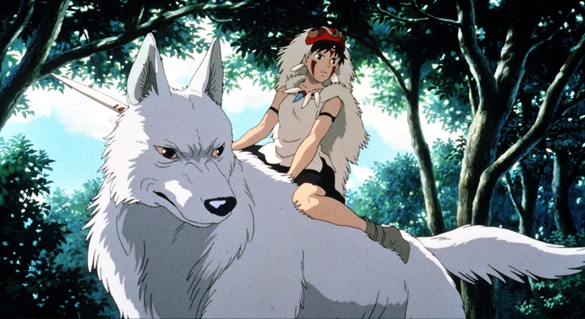
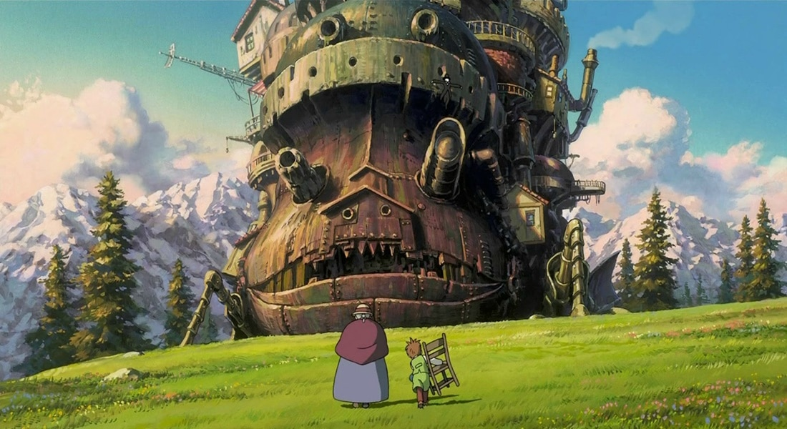
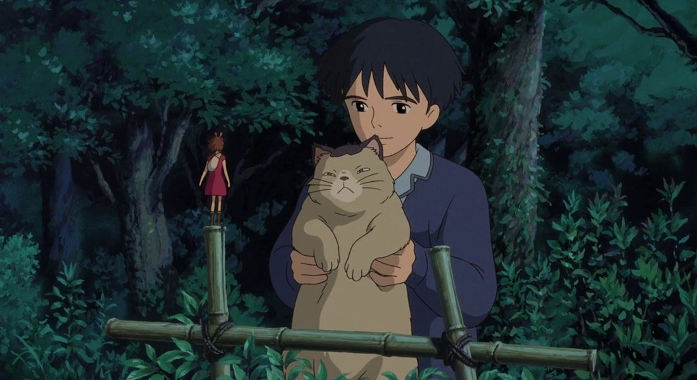

3° Princesa Mononoke

Ambientado no Japão medieval, Princesa Mononoke (1997) acompanha um príncipe que, um belo dia, é atacado por um demônio e marcado por uma maldição fatal. A única maneira de quebrá-la é encontrando o protetor de uma floresta isolada, então ele precisa partir.
Com reflexões sobre a natureza, humanidade e sociedade, a jornada do príncipe o leva até a princesa Mononoke, uma órfã que foi adotada e criada por uma tribo de lobos gigantes e não suporta a presença de humanos.
2° Castelo Animado

O Castelo Animado (2004) acompanha a aventura de Sophie, uma jovem que acaba sendo transformada em uma senhorinha de 90 anos por uma bruxa — só que tudo não se passa de um engano e, agora, ela precisa encontrar uma maneira de reverter a situação.
Com várias críticas contra a guerra, a trama se desenrola dentro do castelo de um feiticeiro nada confiável, onde Sophie vai conhecer e ver coisas inimagináveis para ela até então.
1° O Mundo dos Pequeninos

O Mundo dos Pequeninos (2010) acompanha a história da jovem Arrietty e de sua família que são um pouco... diferentes. Eles são pessoas minúsculas — literalmente — e vivem sob o assoalho de uma casa, onde humanos moram.
Por isso, eles precisam sobreviver escondidos roubando alimentos, lidando com animais e evitando serem descobertos. Mas a situação muda quando um garoto se hospeda e acaba descobrindo a existência dos "pequeninos". A animação aborda várias temas, mas principalmente que tamanho não é documento!